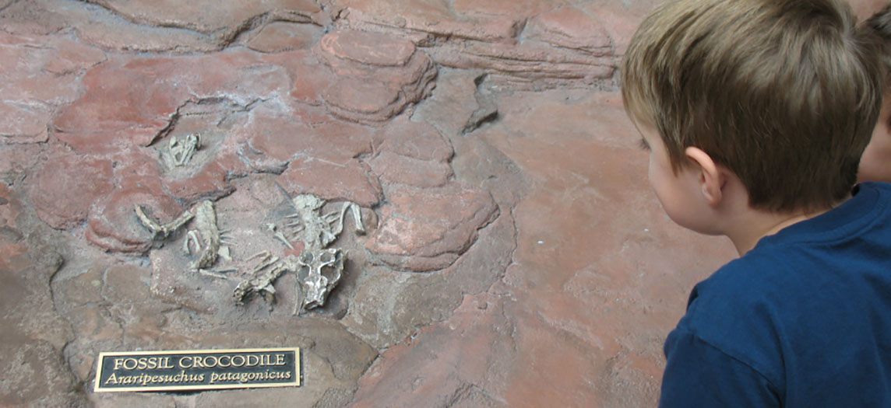
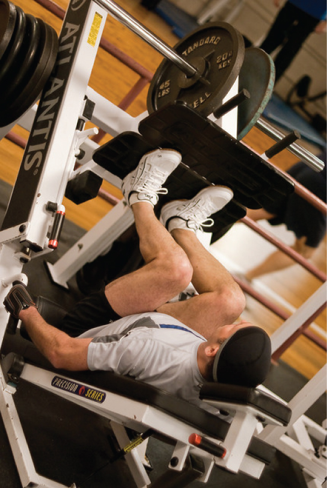
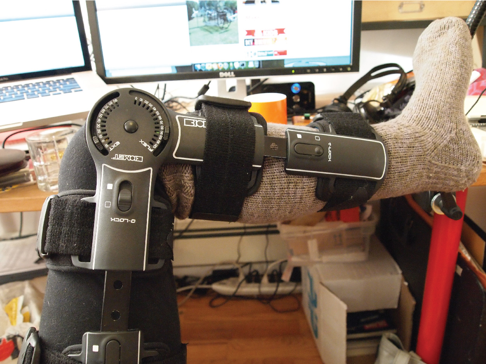
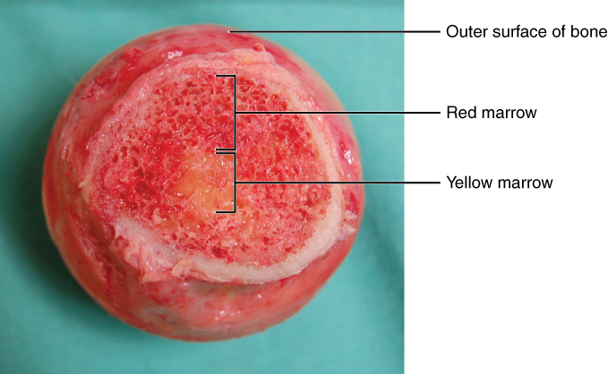
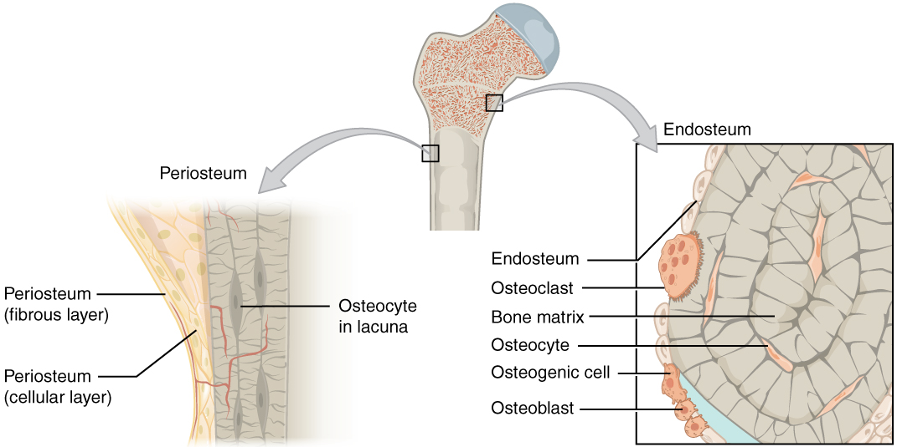
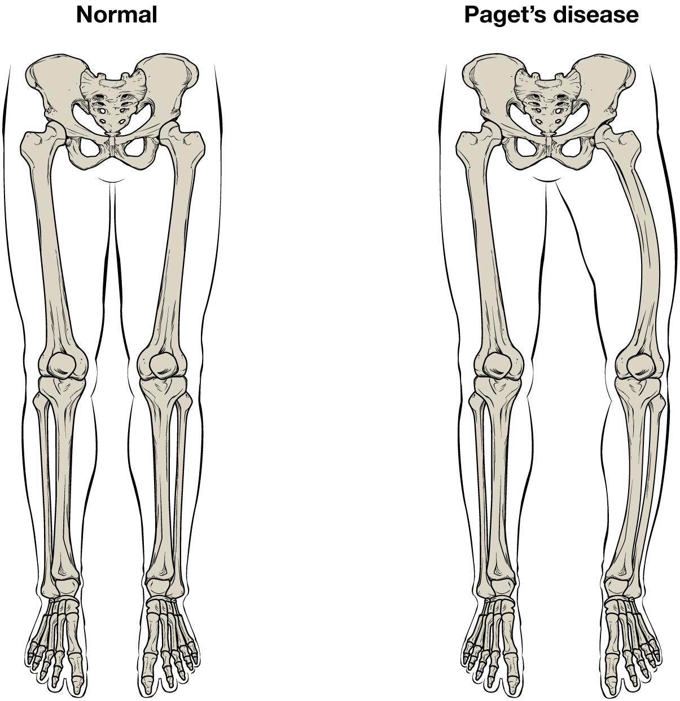
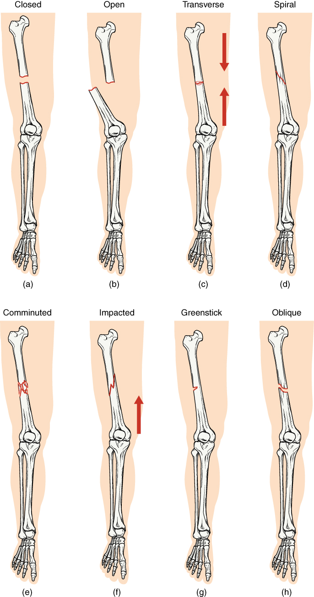

- After studying this chapter, you will be able to:
- List and describe the functions of bones
- Describe the classes of bones
- Discuss the process of bone formation and development
- Explain how bone repairs itself after a fracture
- Discuss the effect of exercise, nutrition, and hormones on bone tissue
- Describe how an imbalance of calcium can affect bone tissue

- Define bone, cartilage, and the skeletal system
- List and describe the functions of the skeletal system
Bone, orosseous tissue, is a hard, dense connective tissue that forms most of the adult skeleton, the support structure of the body. In the areas of the skeleton where bones move (for example, the ribcage and joints),cartilage, a semi-rigid form of connective tissue, provides flexibility and smooth surfaces for movement. Theskeletal systemis the body system composed of bones and cartilage and performs the following critical functions for the human body:
The most apparent functions of the skeletal system are the gross functions—those visible by observation. Simply by looking at a person, you can see how the bones support, facilitate movement, and protect the human body.
Just as the steel beams of a building provide a scaffold to support its weight, the bones and cartilage of your skeletal system compose the scaffold that supports the rest of your body. Without the skeletal system, you would be a limp mass of organs, muscle, and skin.
Bones also facilitate movement by serving as points of attachment for your muscles. While some bones only serve as a support for the muscles, others also transmit the forces produced when your muscles contract. From a mechanical point of view, bones act as levers and joints serve as fulcrums (Figure . Unless a muscle spans a joint and contracts, a bone is not going to move. For information on the interaction of the skeletal and muscular systems, that is, the musculoskeletal system, seek additional content.

Figure :Bones Support MovementBones act as levers when muscles span a joint and contract. (credit: Benjamin J. DeLong)
Bones also protect internal organs from injury by covering or surrounding them. For example, your ribs protect your lungs and heart, the bones of your vertebral column (spine) protect your spinal cord, and the bones of your cranium (skull) protect your brain (Figure).
![This illustration shows how the cranium protects and surrounds the brain. Only the outline of the cranium is visible, which is made transparent to show how the brain sits in the skull. There is a small amount of space between the brain and the cranium but the top and sides of the brain are completely protected by the cranial bones. The bottom of the brain extends below the cranial bones, with the base of the cerebellum seated just above the roof of the mouth. The medulla extends to the bottom of the skull where it meets with the spinal cord.](images/ch6/fig6-3-this-illustration-shows-how-the-cranium-.jpg)
Figure :Bones Protect BrainThe cranium completely surrounds and protects the brain from non-traumatic injury.
Anorthopedistis a doctor who specializes in diagnosing and treating disorders and injuries related to the musculoskeletal system. Some orthopedic problems can be treated with medications, exercises, braces, and other devices, but others may be best treated with surgery (Figure : ).

Figure :Complex BraceAn orthopedist will sometimes prescribe the use of a brace that reinforces the underlying bone structure it is being used to support. (credit: Becky Stern/Flickr)
While the origin of the word “orthopedics” (ortho- = “straight”; paed- = “child”), literally means “straightening of the child,” orthopedists can have patients who range from pediatric to geriatric. In recent years, orthopedists have even performed prenatal surgery to correct spina bifida, a congenital defect in which the neural canal in the spine of the fetus fails to close completely during embryologic development.
Orthopedists commonly treat bone and joint injuries but they also treat other bone conditions including curvature of the spine. Lateral curvatures (scoliosis) can be severe enough to slip under the shoulder blade (scapula) forcing it up as a hump. Spinal curvatures can also be excessive dorsoventrally (kyphosis) causing a hunch back and thoracic compression. These curvatures often appear in preteens as the result of poor posture, abnormal growth, or indeterminate causes. Mostly, they are readily treated by orthopedists. As people age, accumulated spinal column injuries and diseases like osteoporosis can also lead to curvatures of the spine, hence the stooping you sometimes see in the elderly.
Some orthopedists sub-specialize in sports medicine, which addresses both simple injuries, such as a sprained ankle, and complex injuries, such as a torn rotator cuff in the shoulder. Treatment can range from exercise to surgery.
On a metabolic level, bone tissue performs several critical functions. For one, the bone matrix acts as a reservoir for a number of minerals important to the functioning of the body, especially calcium, and phosphorus. These minerals, incorporated into bone tissue, can be released back into the bloodstream to maintain levels needed to support physiological processes. Calcium ions, for example, are essential for muscle contractions and controlling the flow of other ions involved in the transmission of nerve impulses.
Bone also serves as a site for fat storage and blood cell production. The softer connective tissue that fills the interior of most bone is referred to as bone marrow (Figure . There are two types of bone marrow: yellow marrow and red marrow.Yellow marrowcontains adipose tissue; the triglycerides stored in the adipocytes of the tissue can serve as a source of energy.Red marrowis wherehematopoiesis—the production of blood cells—takes place. Red blood cells, white blood cells, and platelets are all produced in the red marrow.

Figure :Head of Femur Showing Red and Yellow MarrowThe head of the femur contains both yellow and red marrow. Yellow marrow stores fat. Red marrow is responsible for hematopoiesis. (credit: modification of work by “stevenfruitsmaak”/Wikimedia Commons)
📖 OpenStax Anatomy & Physiology 2e, Section 6.2. openstax.org · CC BY 4.0
- Classify bones according to their shapes
- Describe the function of each category of bones
The 206 bones that compose the adult skeleton are divided into five categories based on their shapes (Figure . Their shapes and their functions are related such that each categorical shape of bone has a distinct function.
![This illustration shows an anterior view of a human skeleton with call outs of five bones. The first call out is the sternum, or breast bone, which lies along the midline of the thorax. The sternum is the bone to which the ribs connect at the front of the body. It is classified as a flat bone and appears somewhat like a tie, with an enlarged upper section and a thin, tapering, lower section. The next callout is the right femur, which is the thigh bone. The inferior end of the femur is broad where it connects to the knee while the superior edge is ball-shaped where it attaches to the hip socket. The femur is an example of a long bone. The next callout is of the patella or kneecap. It is a small, wedge-shaped bone that sits on the anterior side of the knee. The kneecap is an example of a sesamoid bone. The next callout is a dorsal view of the right foot. The lateral, intermediate and medial cuneiform bones are small, square-shaped bones of the top of the foot. These bones lie between the proximal edge of the toe bones and the inferior edge of the shin bones. The lateral cuneiform is proximal to the fourth toe while the medial cuneiform is proximal to the great toe. The intermediate cuneiform lies between the lateral and medial cuneiform. These bones are examples of short bones. The fifth callout shows a superior view of one of the lumbar vertebrae. The vertebra has a kidney-shaped body connected to a triangle of bone that projects above the body of the vertebra. Two spines project off of the triangle at approximately 45 degree angles. The vertebrae are examples of irregular bones.](images/ch6/fig6-6-this-illustration-shows-an-anterior-view.jpg)
Along boneis one that is cylindrical in shape, being longer than it is wide. Keep in mind, however, that the term describes the shape of a bone, not its size. Long bones are found in the arms (humerus, ulna, radius) and legs (femur, tibia, fibula), as well as in the fingers (metacarpals, phalanges) and toes (metatarsals, phalanges). Long bones function as levers; they move when muscles contract.
Ashort boneis one that is cube-like in shape, being approximately equal in length, width, and thickness. The only short bones in the human skeleton are in the carpals of the wrists and the tarsals of the ankles. Short bones provide stability and support as well as some limited motion.
The term “flat bone” is somewhat of a misnomer because, although a flat bone is typically thin, it is also often curved. Examples include the cranial (skull) bones, the scapulae (shoulder blades), the sternum (breastbone), and the ribs. Flat bones serve as points of attachment for muscles and often protect internal organs.
Anirregular boneis one that does not have any easily characterized shape and therefore does not fit any other classification. These bones tend to have more complex shapes, like the vertebrae that support the spinal cord and protect it from compressive forces. Many facial bones, particularly the ones containing sinuses, are classified as irregular bones.
Asesamoid boneis a small, round bone that, as the name suggests, is shaped like a sesame seed. These bones form in tendons (the sheaths of tissue that connect bones to muscles) where a great deal of pressure is generated in a joint. The sesamoid bones protect tendons by helping them overcome compressive forces. Sesamoid bones vary in number and placement from person to person but are typically found in tendons associated with the feet, hands, and knees. The patellae (singular = patella) are the only sesamoid bones found in common with every person. Table reviews bone classifications with their associated features, functions, and examples.
| Bone classification | Features | Function(s) | Examples |
|---|---|---|---|
| Long | Cylinder-like shape, longer than it is wide | Leverage | Femur, tibia, fibula, metatarsals, humerus, ulna, radius, metacarpals, phalanges |
| Short | Cube-like shape, approximately equal in length, width, and thickness | Provide stability, support, while allowing for some motion | Carpals, tarsals |
| Flat | Thin and curved | Points of attachment for muscles; protectors of internal organs | Sternum, ribs, scapulae, cranial bones |
| Irregular | Complex shape | Protect internal organs | Vertebrae, facial bones |
| Sesamoid | Small and round; embedded in tendons | Protect tendons from compressive forces | Patellae |
📖 OpenStax Anatomy & Physiology 2e, Section 6.3. openstax.org · CC BY 4.0
- Identify the anatomical features of a bone
- Define and list examples of bone markings
- Describe the histology of bone tissue
- Compare and contrast compact and spongy bone
- Identify the structures that compose compact and spongy bone
- Describe how bones are nourished and innervated
Bone tissue (osseous tissue) differs greatly from other tissues in the body. Bone is hard and many of its functions depend on that characteristic hardness. Later discussions in this chapter will show that bone is also dynamic in that its shape adjusts to accommodate stresses. This section will examine the gross anatomy of bone first and then move on to its histology.
The structure of a long bone allows for the best visualization of all of the parts of a bone (Figure . A long bone has two parts: thediaphysisand theepiphysis. The diaphysis is the tubular shaft that runs between the proximal and distal ends of the bone. The hollow region in the diaphysis is called themedullary cavity, which is filled with yellow marrow. The walls of the diaphysis are composed of dense and hardcompact bone.
![This illustration depicts an anterior view of the right femur, or thigh bone. The inferior end that connects to the knee is at the bottom of the diagram and the superior end that connects to the hip is at the top of the diagram. The bottom end of the bone contains a smaller lateral bulge and a larger medial bulge. A blue articular cartilage covers the inner half of each bulge as well as the small trench that runs between the bulges. This area of the inferior end of the bone is labeled the distal epiphysis. Above the distal epiphysis is the metaphysis, where the bone tapers from the wide epiphysis into the relatively thin shaft. The entire length of the shaft is the diaphysis. The superior half of the femur is cut away to show its internal contents. The bone is covered with an outer translucent sheet called the periosteum. At the midpoint of the diaphysis, a nutrient artery travels through the periosteum and into the inner layers of the bone. The periosteum surrounds a white cylinder of solid bone labeled compact bone. The cavity at the center of the compact bone is called the medullary cavity. The inner layer of the compact bone that lines the medullary cavity is called the endosteum. Within the diaphysis, the medullary cavity contains a cylinder of yellow bone marrow that is penetrated by the nutrient artery. The superior end of the femur is also connected to the diaphysis by a metaphysis. In this upper metaphysis, the bone gradually widens between the diaphysis and the proximal epiphysis. The proximal epiphysis of the femur is roughly hexagonal in shape. However, the upper right side of the hexagon has a large, protruding knob. The femur connects and rotates within the hip socket at this knob. The knob is covered with a blue colored articular cartilage. The internal anatomy of the upper metaphysis and proximal epiphysis are revealed. The medullary cavity in these regions is filled with the mesh like spongy bone. Red bone marrow occupies the many cavities within the spongy bone. There is a clear, white line separating the spongy bone of the upper metaphysis with that of the proximal epiphysis. This line is labeled the epiphyseal line.](images/ch6/fig6-7-this-illustration-depicts-an-anterior-vi.jpg)
Figure : \Anatomy of a Long BoneA typical long bone shows the gross anatomical characteristics of bone.
The wider section at each end of the bone is called the epiphysis (plural = epiphyses), which is filled with spongy bone. Red marrow fills the spaces in the spongy bone. Each epiphysis meets the diaphysis at the metaphysis, the narrow area that contains theepiphyseal plate(growth plate), a layer of hyaline (transparent) cartilage in a growing bone. When the bone stops growing in early adulthood (approximately 18–21 years), the cartilage is replaced by osseous tissue and the epiphyseal plate becomes an epiphyseal line.
The medullary cavity has a delicate membranous lining called theendosteum(end- = “inside”; oste- = “bone”), where bone growth, repair, and remodeling occur. The outer surface of the bone is covered with a fibrous membrane called theperiosteum(peri- =“around” or “surrounding”). The periosteum contains blood vessels, nerves, and lymphatic vessels that nourish compact bone. Tendons and ligaments also attach to bones at the periosteum. The periosteum covers the entire outer surface except where the epiphyses meet other bones to form joints (Figure . In this region, the epiphyses are covered witharticular cartilage, a thin layer of cartilage that reduces friction and acts as a shock absorber.

![This illustration shows a cross section of a cranial bone, constructed somewhat like a sandwich. The topmost and bottommost layers are the thin, translucent, periosteum. The upper and lower periosteum cover an upper and lower layer of compact bone, respectively. The compact bone is solid, with each layer occupying about one tenth of the thickness of the cranial bone. The majority of the cross section is occupied by the spongy bone, or diploe, sandwiched between the upper and lower compact bone. The spongy bone contains many crisscrossing threads of bone. Dark air spaces occur between the threads, giving the bone a porous appearance, much like that of a sponge or Swiss cheese.](images/ch6/fig6-9-this-illustration-shows-a-cross-section-.jpg)
Figure :Anatomy of a Flat BoneThis cross-section of a flat bone shows the spongy bone (diploë) lined on either side by a layer of compact bone.
The surface features of bones vary considerably, depending on the function and location in the body. Table 6.2 describes the bone markings, which are illustrated in (Figure . There are three general classes of bone markings: (1) articulations, (2) projections, and (3) holes. As the name implies, anarticulationis where two bone surfaces come together (articulus = “joint”). These surfaces tend to conform to one another, such as one being rounded and the other cupped, to facilitate the function of the articulation. Aprojectionis an area of a bone that projects above the surface of the bone. These are the attachment points for tendons and ligaments. In general, their size and shape is an indication of the forces exerted through the attachment to the bone. Aholeis an opening or groove in the bone that allows blood vessels and nerves to enter the bone. As with the other markings, their size and shape reflect the size of the vessels and nerves that penetrate the bone at these points.
| Marking | Description | Example |
|---|---|---|
| Articulations | Where two bones meet | Knee joint |
| Head | Prominent rounded surface | Head of femur |
| Facet | Flat surface | Vertebrae |
| Condyle | Rounded surface | Occipital condyles |
| Projections | Raised markings | Spinous process of the vertebrae |
| Protuberance | Protruding | Chin |
| Process | Prominence feature | Transverse process of vertebra |
| Spine | Sharp process | Ischial spine |
| Tubercle | Small, rounded process | Tubercle of humerus |
| Tuberosity | Rough surface | Deltoid tuberosity |
| Line | Slight, elongated ridge | Temporal lines of the parietal bones |
| Crest | Ridge | Iliac crest |
| Holes | Holes and depressions | Foramen (holes through which blood vessels can pass through) |
| Fossa | Elongated basin | Mandibular fossa |
| Fovea | Small pit | Fovea capitis on the head of the femur |
| Sulcus | Groove | Sigmoid sulcus of the temporal bones |
| Canal | Passage in bone | Auditory canal |
| Fissure | Slit through bone | Auricular fissure |
| Foramen | Hole through bone | Foramen magnum in the occipital bone |
| Meatus | Opening into canal | External auditory meatus |
| Sinus | Air-filled space in bone | Nasal sinus |
![This illustration contains three diagrams. The left diagram is titled examples of processes formed where tendons or ligaments attach. The image shows an anterior view of the femur and an anterior view of the humerus. For the femur, the distal epiphysis contains a smaller lateral bulge and a larger medial bulge. These are examples of condyles. The inner halves of the two condyles as well as the groove between them compose a facet. An oval-shaped ridge on the medial surface of the distal metaphysis is an example of a tubercle. On the proximal epiphysis of the femur, the large knob that attaches to the hip socket is an example of a head. The tip of the head contains a small depression, an example of a fovea called the fovea capitis. On the humerus, the distal epiphysis contains a central depression that is an example of a fossa. Two condyles are located on the right and left sides of the fossa. The diaphysis of the humerus contains a small ridge running up the shaft that is an example of a tuberosity. The proximal epiphysis of the humerus contains a lateral and a medial bulge that are both examples of tubercles. Finally, a narrow groove runs from the center of the proximal metaphysis in between the medial and lateral condyles. This is an example of a sulcus. The middle image is entitled elevations or depressions. It shows an anterior view of the hip bones. The hip bones are shaped like two wings that join at the bottom. The crest along the upper edge of each hip bones, at the tip of each “wing” is an example of an elevation. A depression on the inner surface of both hip bones just under the crest is called out as a fossa. The right image is entitled examples of openings and shows an anterior view of the skull. The bone underlying the chin is an example of a protuberance while two small holes above each eye socket are examples of foramen. Five green sinuses surround the nose cavity are colored green. These are sinuses because they are hollowed out cavities within the skull bones. A small channel leads into the corner of each eye where the tear ducts occur. These two channels are both examples of a canal. Finally, the bones that form the posterior wall of the eye socket have a small crack running diagonally away from the nose. These are examples of fissures.](images/ch6/fig6-10-this-illustration-contains-three-diagram.jpg)
Figure :Bone FeaturesThe surface features of bones depend on their function, location, attachment of ligaments and tendons, or the penetration of blood vessels and nerves.
Bone contains a relatively small number of cells entrenched in a matrix of collagen fibers that provide a surface for inorganic salt crystals to adhere. These salt crystals form when calcium phosphate and calcium carbonate combine to create hydroxyapatite, which incorporates other inorganic salts like magnesium hydroxide, fluoride, and sulfate as it crystallizes, or calcifies, on the collagen fibers. The hydroxyapatite crystals give bones their hardness and strength, while the collagen fibers give them flexibility so that they are not brittle.
Although bone cells compose a small amount of the bone volume, they are crucial to the function of bones. Four types of cells are found within bone tissue: osteoblasts, osteocytes, osteogenic cells, and osteoclasts (Figure 6..
![The top of this diagram shows the cross section of a generic bone with three zoom in boxes. The first box is on the periosteum. The second box is on the middle of the compact bone layer. The third box is on the inner edge of the compact bone where it transitions into the spongy bone. The callout in the periosteum points to two images. In the first image, four osteoblast cells are sitting end to end on the periosteum. The osteoblasts are roughly square shaped, except for one of the cells which is developing small, finger like projections. The caption says, “Osteoblasts form the matrix of the bone.” The second image called out from the periosteum shows a large, amorphous osteogenic cell sitting on the periosteum. The osteogenic cell is surrounded on both sides by a row of much smaller osteoblasts. The cell is shaped like a mushroom cap and also has finger like projections. The cell is a stem cell that develops into other bone cells. The box in the middle of the compact bone layer is pointing to an osteocyte. The osteocyte is a thin cell, roughly diamond shaped, with many branching, finger-like projections. The osteoctyes maintain bone tissue. The box at the inner edge of the compact bone is pointing to an osteoclast. The osteoclast is a large, round cell with multiple nuclei. It also has rows of fine finger like projections on its lower surface where it is sitting on the compact bone. The osteoclast reabsorbs bone.](images/ch6/fig6-11-the-top-of-this-diagram-shows-the-cross-.jpg)
Figure :Bone CellsFour types of cells are found within bone tissue. Osteogenic cells are undifferentiated and develop into osteoblasts. When osteoblasts get trapped within the calcified matrix, their structure and function changes, and they become osteocytes. Osteoclasts develop from monocytes and macrophages and differ in appearance from other bone cells.
Theosteoblastis the bone cell responsible for forming new bone and is found in the growing portions of bone, including the periosteum and endosteum. Osteoblasts, which do not divide, synthesize and secrete the collagen matrix and calcium salts. As the secreted matrix surrounding the osteoblast calcifies, the osteoblast become trapped within it; as a result, it changes in structure and becomes anosteocyte, the primary cell of mature bone and the most common type of bone cell. Each osteocyte is located in a space called alacunaand is surrounded by bone tissue. Osteocytes maintain the mineral concentration of the matrix via the secretion of enzymes. Like osteoblasts, osteocytes lack mitotic activity. They can communicate with each other and receive nutrients via long cytoplasmic processes that extend throughcanaliculi(singular = canaliculus), channels within the bone matrix.
If osteoblasts and osteocytes are incapable of mitosis, then how are they replenished when old ones die? The answer lies in the properties of a third category of bone cells—theosteogenic cell. These osteogenic cells are undifferentiated with high mitotic activity and they are the only bone cells that divide. Immature osteogenic cells are found in the deep layers of the periosteum and the marrow. They differentiate and develop into osteoblasts.
The dynamic nature of bone means that new tissue is constantly formed, and old, injured, or unnecessary bone is dissolved for repair or for calcium release. The cell responsible for bone resorption, or breakdown, is theosteoclast. They are found on bone surfaces, are multinucleated, and originate from monocytes and macrophages, two types of white blood cells, not from osteogenic cells. Osteoclasts are continually breaking down old bone while osteoblasts are continually forming new bone. The ongoing balance between osteoblasts and osteoclasts is responsible for the constant but subtle reshaping of bone. Table reviews the bone cells, their functions, and locations.
| Cell type | Function | Location |
|---|---|---|
| Osteogenic cells | Develop into osteoblasts | Deep layers of the periosteum and the marrow |
| Osteoblasts | Bone formation | Growing portions of bone, including periosteum and endosteum |
| Osteocytes | Maintain mineral concentration of matrix | Entrapped in matrix |
| Osteoclasts | Bone resorption | Bone surfaces and at sites of old, injured, or unneeded bone |
The differences between compact and spongy bone are best explored via their histology. Most bones contain compact and spongy osseous tissue, but their distribution and concentration vary based on the bone’s overall function. Compact bone is dense so that it can withstand compressive forces, while spongy (cancellous) bone has open spaces and supports shifts in weight distribution.
Compact bone is the denser, stronger of the two types of bone tissue (Figure . It can be found under the periosteum and in the diaphyses of long bones, where it provides support and protection.
![A generic long bone is shown at the top of this illustration. The bone is split in half lengthwise to show its internal anatomy. The outer gray covering of the bone is labeled the periosteum. Within the periosteum is a thin layer of compact bone. The compact bone surrounds a central cavity called the medullary cavity. The medullary cavity is filled with spongy bone at the two epiphyses. A callout box shows that the main image is zooming in on the compact bone on the left side of the bone. On the main image, the periosteum is being peeled back to show its two layers. The outer layer of the periosteum is the outer fibrous layer. This layer has a periosteal artery and a periosteal vein running along its outside edge. The inner layer of the periosteum is labeled the inner osteogenic layer. The compact bone lies to the right of the periosteum and occupies the majority of the main image. Two flat layers of compact bone line the inner surface of the ostegenic periosteum. These sheets of compact bone are called the circumferential lamellae. The majority of the compact bone has lamellae running perpendicular to that of the circumferential lamellae. These concentric lamellae are arranged in a series of concentric tubes. There are small cavities between the layers of concentric lamellae called lacunae. The centermost concentric lamella surrounds a hollow central canal. A blue vein, a red artery, a yellow nerve and a green lymph vessel run vertically through the central canal. A set of concentric lamellae, its associated lacunae and the vessels and nerves of the central canal are collectively called an osteon. The front edge of the diagram shows a longitudinal cross section of one of the osteons. The vessels and nerve are visible running through the center of the osteon throughout its length. In addition, blood vessels can run from the periosteum through the sides of the osteons and connect with the vessels of the central canal. The blood vessels travel through the sides of the osteons via a perforating canal. The open areas between neighboring osteons are also filled with compact bone. This “filler” bone is referred to as the interstitial lamellae. At the far right of the compact bone, the edge of the spongy bone is visible. The spongy bone is a series of crisscrossing bony arches called trabeculae. There are many open spaces between the trabeculae, giving the spongy bone its sponge-like appearance.](images/ch6/fig6-12-a-generic-long-bone-is-shown-at-the-top-.jpg)
Figure :Diagram of Compact Bone(a) This cross-sectional view of compact bone shows the basic structural unit, the osteon. (b) In this micrograph of the osteon, you can clearly see the concentric lamellae and central canals. LM × 40. (Micrograph provided by the Regents of University of Michigan Medical School © 2012)
The microscopic structural unit of compact bone is called anosteon, or Haversian system. Each osteon is composed of concentric rings of calcified matrix called lamellae (singular = lamella). Running down the center of each osteon is thecentral canal, or Haversian canal, which contains blood vessels, nerves, and lymphatic vessels. These vessels and nerves branch off at right angles through aperforating canal, also known as Volkmann’s canals, to extend to the periosteum and endosteum.
The osteocytes are located inside spaces called lacunae (singular = lacuna), found at the borders of adjacent lamellae. As described earlier, canaliculi connect with the canaliculi of other lacunae and eventually with the central canal. This system allows nutrients to be transported to the osteocytes and wastes to be removed from them.
#### Spongy (Cancellous) Bone
Like compact bone,spongy bone, also known as cancellous bone, contains osteocytes housed in lacunae, but they are not arranged in concentric circles. Instead, the lacunae and osteocytes are found in a lattice-like network of matrix spikes calledtrabeculae(singular = trabecula) (Figure . The trabeculae may appear to be a random network, but each trabecula forms along lines of stress to provide strength to the bone. The spaces of the trabeculated network provide balance to the dense and heavy compact bone by making bones lighter so that muscles can move them more easily. In addition, the spaces in some spongy bones contain red marrow, protected by the trabeculae, where hematopoiesis occurs.
![This illustration shows the spongy bone within the proximal epiphysis of the femur in two successively magnified images. The lower-magnification image shows two layers of crisscrossing trabeculae. The surface of each is dotted with small black holes which are the openings of the canaliculi. One of the trabeculae is in a cross section to show its internal layers. The outermost covering of the lamellae is called the endosteum. This endosteum surrounds several layers of concentric lamellae. The higher-magnification image shows the cross section of the trabeculae more clearly. Three concentric lamellae are shown in this view, each possessing perpendicular black lines. These lines are the canaliculi and are oriented on the round lamellae similar to the spokes of a wheel. In between the lamellae are small cavities called lacunae which house cells called osteocytes. In addition, two large osteoclasts are seated on the outer edge of the outermost lamellae. The outermost lamellae are also surrounded by groups of small, white, osteoblasts.](images/ch6/fig6-13-this-illustration-shows-the-spongy-bone-.jpg)
Figure :Diagram of Spongy BoneSpongy bone is composed of trabeculae that contain the osteocytes. Red marrow fills the spaces in some bones.
Skeletal System: Paget’s Disease
Paget’s disease usually occurs in adults over age 40. It is a disorder of the bone remodeling process that begins with overactive osteoclasts. This means more bone is resorbed than is laid down. The osteoblasts try to compensate but the new bone they lay down is weak and brittle and therefore prone to fracture.
While some people with Paget’s disease have no symptoms, others experience pain, bone fractures, and bone deformities (Figure . Bones of the pelvis, skull, spine, and legs are the most commonly affected. When occurring in the skull, Paget’s disease can cause headaches and hearing loss.

Figure :Paget's DiseaseNormal leg bones are relatively straight, but those affected by Paget’s disease are porous and curved.
What causes the osteoclasts to become overactive? The answer is still unknown, but hereditary factors seem to play a role. Some scientists believe Paget’s disease is due to an as-yet-unidentified virus.
Paget’s disease is diagnosed via imaging studies and lab tests. X-rays may show bone deformities or areas of bone resorption. Bone scans are also useful. In these studies, a dye containing a radioactive ion is injected into the body. Areas of bone resorption have an affinity for the ion, so they will light up on the scan if the ions are absorbed. In addition, blood levels of an enzyme called alkaline phosphatase are typically elevated in people with Paget’s disease.
Bisphosphonates, drugs that decrease the activity of osteoclasts, are often used in the treatment of Paget’s disease. However, in a small percentage of cases, bisphosphonates themselves have been linked to an increased risk of fractures because the old bone that is left after bisphosphonates are administered becomes worn out and brittle. Still, most doctors feel that the benefits of bisphosphonates more than outweigh the risk; the medical professional has to weigh the benefits and risks on a case-by-case basis. Bisphosphonate treatment can reduce the overall risk of deformities or fractures, which in turn reduces the risk of surgical repair and its associated risks and complications.
The spongy bone and medullary cavity receive nourishment from arteries that pass through the compact bone. The arteries enter through thenutrient foramen(plural = foramina), small openings in the diaphysis (Figure . The osteocytes in spongy bone are nourished by blood vessels of the periosteum that penetrate spongy bone and blood that circulates in the marrow cavities. As the blood passes through the marrow cavities, it is collected by veins, which then pass out of the bone through the foramina.
In addition to the blood vessels, nerves follow the same paths into the bone where they tend to concentrate in the more metabolically active regions of the bone. The nerves sense pain, and it appears the nerves also play roles in regulating blood supplies and in bone growth, hence their concentrations in metabolically active sites of the bone.
![This illustration shows an anterior view if the right femur. The femur is split in half lengthwise to show its internal anatomy. The outer covering of the femur is labeled the periosteum. Within it is a thin layer of compact bone that surrounds a central cavity called the medullary or marrow cavity. This cavity is filled with spongy bone at both epiphyses. A nutrient artery and vein travels through the periosteum and compact bone at the center of the diaphysis. After entering the bone, the nutrient arteries and veins spread throughout the marrow cavity in both directions. Some of the arteries and veins in the marrow cavity also spread into the spongy bone within the distal and proximal epiphyses. However, additional blood vessels called the metaphyseal arteries and the metaphyseal veins enter into the metaphysis from outside of the bone.](images/ch6/fig6-15-this-illustration-shows-an-anterior-view.jpg)
Figure :Diagram of Blood and Nerve Supply to BoneBlood vessels and nerves enter the bone through the nutrient foramen.
Watch this video to see the microscopic features of a bone.
📖 OpenStax Anatomy & Physiology 2e, Section 6.4. openstax.org · CC BY 4.0
- Explain the function of cartilage
- List the steps of intramembranous ossification
- List the steps of endochondral ossification
- Explain the growth activity at the epiphyseal plate
- Compare and contrast the processes of modeling and remodeling
In the early stages of embryonic development, the embryo’s skeleton consists of fibrous membranes and hyaline cartilage. By the sixth or seventh week of embryonic life, the actual process of bone development,ossification(osteogenesis), begins. There are two osteogenic pathways—intramembranous ossification and endochondral ossification—but bone is the same regardless of the pathway that produces it.
Bone is a replacement tissue; that is, it uses a model tissue on which to lay down its mineral matrix. For skeletal development, the most common template is cartilage. During fetal development, a framework is laid down that determines where bones will form. This framework is a flexible, semi-solid matrix produced by chondroblasts and consists of hyaluronic acid, chondroitin sulfate, collagen fibers, and water. As the matrix surrounds and isolates chondroblasts, they are called chondrocytes. Unlike most connective tissues, cartilage is avascular, meaning that it has no blood vessels supplying nutrients and removing metabolic wastes. All of these functions are carried on by diffusion through the matrix. This is why damaged cartilage does not repair itself as readily as most tissues do.
Throughout fetal development and into childhood growth and development, bone forms on the cartilaginous matrix. By the time a fetus is born, most of the cartilage has been replaced with bone. Some additional cartilage will be replaced throughout childhood, and some cartilage remains in the adult skeleton.
Duringintramembranous ossification, compact and spongy bone develops directly from sheets of mesenchymal (undifferentiated) connective tissue. The flat bones of the face, most of the cranial bones, and the clavicles (collarbones) are formed via intramembranous ossification.
The process begins when mesenchymal cells in the embryonic skeleton gather together and begin to differentiate into specialized cells (Figure . Some of these cells will differentiate into capillaries, while others will become osteogenic cells and then osteoblasts. Although they will ultimately be spread out by the formation of bone tissue, early osteoblasts appear in a cluster called anossification center.
The osteoblasts secreteosteoid, uncalcified matrix, which calcifies (hardens) within a few days as mineral salts are deposited on it, thereby entrapping the osteoblasts within. Once entrapped, the osteoblasts become osteocytes (Figure . As osteoblasts transform into osteocytes, osteogenic cells in the surrounding connective tissue differentiate into new osteoblasts.
Osteoid (unmineralized bone matrix) secreted around the capillaries results in a trabecular matrix, while osteoblasts on the surface of the spongy bone become the periosteum (Figure . The periosteum then creates a protective layer of compact bone superficial to the trabecular bone. The trabecular bone crowds nearby blood vessels, which eventually condense into red marrow (Figure .
![Image A shows seven osteoblasts, cells with small, finger like projections. They are surrounded by granules of osteoid. Both the cells and the osteoid are contained within a blue, circular, ossification center that is surrounded by a “socket” of dark, string-like collagen fibers and gray mesenchymal cells. The cells are generally amorphous, similar in appearance to an amoeba. In image B, the ossification center is no longer surrounded by a ring of osteoblasts. The osteoblasts have secreted bone into the ossification center, creating a new bone matrix. There are also five osteocytes embedded in the new bone matrix. The osteocytes are thin, oval-shaped cells with many fingerlike projections. Osteoid particles are still embedded in the bony matrix in image B. In image C, the ring of osteoblasts surrounding the ossification center has separated, forming an upper and lower layer of osteoblasts sandwiched between the two layers of mesenchyme cells. A label indicates that the mesenchyme cells and the surrounding collagen fibers form the periosteum. The osteoblasts secrete spongy bone into the space between the two osteoblast rows. Therefore, the accumulating spongy bone pushes the upper and lower rows of osteoblasts away from each other. In this image, most of the spongy bone has been secreted by the osteoblasts, as the trabeculae are visible. In addition, an artery has already broken through the periosteum and invaded the spongy bone. Image D looks similar to image C, except that the rows of osteoblasts are now secreting layers of compact bone between the spongy bone and the periosteum. The artery has now branched and spread throughout the spongy bone. A label indicates that the cavities between the trabeculae now contain red bone marrow.](images/ch6/fig6-16-image-a-shows-seven-osteoblasts-cells-wi.jpg)
Figure :Intramembranous OssificationIntramembranous ossification follows four steps. (a) Mesenchymal cells group into clusters, and ossification centers form. (b) Secreted osteoid traps osteoblasts, which then become osteocytes. (c) Trabecular matrix and periosteum form. (d) Compact bone develops superficial to the trabecular bone, and crowded blood vessels condense into red marrow.
Intramembranous ossification beginsin uteroduring fetal development and continues on into adolescence. At birth, the skull and clavicles are not fully ossified nor are the sutures of the skull closed. This allows the skull and shoulders to deform during passage through the birth canal. The last bones to ossify via intramembranous ossification are the flat bones of the face, which reach their adult size at the end of the adolescent growth spurt.
Inendochondral ossification, bone develops byreplacinghyaline cartilage. Cartilage does not become bone. Instead, cartilage serves as a template to be completely replaced by new bone. Endochondral ossification takes much longer than intramembranous ossification. Bones at the base of the skull and long bones form via endochondral ossification.
In a long bone, for example, at about 6 to 8 weeks after conception, some of the mesenchymal cells differentiate into chondrocytes (cartilage cells) that form the cartilaginous skeletal precursor of the bones (Figure . Soon after, theperichondrium, a membrane that covers the cartilage, appears Figure .
![Image A shows a small piece of hyaline cartilage that looks like a bone but without the characteristic enlarged ends. The hyaline cartilage is surrounded by a thin perichondrium. In image B, the hyaline cartilage has increased in size and the ends have begun to bulge outwards. A group of dark granules form at the center of the cartilage. This is labeled the calcified matrix, as opposed to the rest of the cartilage, which is uncalcified matrix. In image C, the hyaline cartilage has again increased in size and spongy bone has formed at the calcified matrix. This is now called the primary ossification center. A nutrient artery has invaded the ossification center and is growing through the cavities of the new spongy bone. In image D, the cartilage now looks like a bone, as it has greatly increased in size and each end has two bulges. Only the proximal half of the bone is shown in all of the remaining images. In image D, spongy bone has completely developed in the medullary cavity, which is surrounded, on both sides, by compact bone. Now, the calcified matrix is located at the border between the proximal metaphysis and the proximal epiphysis. The epiphysis is still composed of uncalcified matrix. In image E, arteries and veins have now invaded the epiphysis, forming a calcified matrix at its center. This is called a secondary ossification center. In image F, the interior of the epiphysis is now completely calcified into bone. The outer edge of the epiphysis remains as cartilage, forming the articular cartilage at the joint. In addition, the border between the epiphysis and the metaphysis remains uncalcified, forming the epiphyseal plate.](images/ch6/fig6-17-image-a-shows-a-small-piece-of-hyaline-c.jpg)
Figure :Endochondral OssificationEndochondral ossification follows five steps. (a) Mesenchymal cells differentiate into chondrocytes. (b) The cartilage model of the future bony skeleton and the perichondrium form. (c) Capillaries penetrate cartilage. Perichondrium transforms into periosteum. Periosteal collar develops. Primary ossification center develops. (d) Cartilage and chondrocytes continue to grow at ends of the bone. (e) Secondary ossification centers develop. (f) Cartilage remains at epiphyseal (growth) plate and at joint surface as articular cartilage.
As more matrix is produced, the chondrocytes in the center of the cartilaginous model grow in size. As the matrix calcifies, nutrients can no longer reach the chondrocytes. This results in their death and the disintegration of the surrounding cartilage. Blood vessels invade the resulting spaces, not only enlarging the cavities but also carrying osteogenic cells with them, many of which will become osteoblasts. These enlarging spaces eventually combine to become the medullary cavity.
As the cartilage grows, capillaries penetrate it. This penetration initiates the transformation of the perichondrium into the bone-producing periosteum. Here, the osteoblasts form a periosteal collar of compact bone around the cartilage of the diaphysis. By the second or third month of fetal life, bone cell development and ossification ramps up and creates theprimary ossification center, a region deep in the periosteal collar where ossification begins (Figure 6.17c).
While these deep changes are occurring, chondrocytes and cartilage continue to grow at the ends of the bone (the future epiphyses), which increases the bone’s length at the same time bone is replacing cartilage in the diaphyses. By the time the fetal skeleton is fully formed, cartilage only remains at the joint surface as articular cartilage and between the diaphysis and epiphysis as the epiphyseal plate, the latter of which is responsible for the longitudinal growth of bones. After birth, this same sequence of events (matrix mineralization, death of chondrocytes, invasion of blood vessels from the periosteum, and seeding with osteogenic cells that become osteoblasts) occurs in the epiphyseal regions, and each of these centers of activity is referred to as asecondary ossification center(Figure 6.17e).
The epiphyseal plate is the area of growth in a long bone. It is a layer of hyaline cartilage where ossification occurs in immature bones. On the epiphyseal side of the epiphyseal plate, cartilage is formed. On the diaphyseal side, cartilage is ossified, and the diaphysis grows in length. The epiphyseal plate is composed of four zones of cells and activity (Figure . Thereserve zoneis the region closest to the epiphyseal end of the plate and contains small chondrocytes within the matrix. These chondrocytes do not participate in bone growth but secure the epiphyseal plate to the osseous tissue of the epiphysis.
![This illustration shows the zones bordering the epiphyseal plate of the epiphysis. The topmost layer of the epiphysis is the reserve zone, which is colored blue because it is made of cartilage. Two arteries are shown travelling through this zone to supply nutrients to the second zone: the proliferative zone. Here, five chondrocytes are undergoing mitosis. They continually divide, producing five long rows of chondrocytes. The next zone is the zone of maturation and hypertrophy. Here, lipids, glycogen and alkaline phosphatase accumulate, causing the cartilaginous matrix to calcify. This zone consists of five rows of ten chondrocytes which are increasing in size as one moves down a row. The next zone is the calcified matrix. Here, the chondrocytes have hardened and die as the matrix around them has calcified. The bottommost row is the zone of ossification. This zone is actually part of the metaphysis. Arteries from the metaphysis branch through the newly-formed trabeculae in this zone. The newly deposited bone tissue at the top of the zone of ossification is called the primary spongiosa. The older bone at the bottom of the zone of ossification is labeled the secondary spongiosa.](images/ch6/fig6-18-this-illustration-shows-the-zones-border.jpg)
Figure :Longitudinal Bone GrowthThe epiphyseal plate is responsible for longitudinal bone growth.
Theproliferative zoneis the next layer toward the diaphysis and contains stacks of slightly larger chondrocytes. It makes new chondrocytes (via mitosis) to replace those that die at the diaphyseal end of the plate. Chondrocytes in the next layer, thezone of maturation and hypertrophy, are older and larger than those in the proliferative zone. The more mature cells are situated closer to the diaphyseal end of the plate. The longitudinal growth of bone is a result of cellular division in the proliferative zone and the maturation of cells in the zone of maturation and hypertrophy.
Most of the chondrocytes in thezone of calcified matrix, the zone closest to the diaphysis, are dead because the matrix around them has calcified. Capillaries and osteoblasts from the diaphysis penetrate this zone, and the osteoblasts secrete bone tissue on the remaining calcified cartilage. Thus, the zone of calcified matrix connects the epiphyseal plate to the diaphysis. A bone grows in length when osseous tissue is added to the diaphysis.
Bones continue to grow in length until early adulthood. The rate of growth is controlled by hormones, which will be discussed later. When the chondrocytes in the epiphyseal plate cease their proliferation and bone replaces the cartilage, longitudinal growth stops. All that remains of the epiphyseal plate is theepiphyseal line(Figure .
![This illustration shows anterior views of a right and left femur. The left femur possesses a growth plate at the border of its distal metaphysis and distal epiphysis. The proximal epiphysis has two growth plates. The first is located below the head of the femur while the second is located below the trochanter, which is the bump on the lateral side of the femur. The right femur has the same plates as the left femur. However, the left femur represents a mature long bone. Here, growth is completed and the epiphyseal plate has degraded to a thin, faint, epiphyseal line.](images/ch6/fig6-19-this-illustration-shows-anterior-views-o.jpg)
Figure :Progression from Epiphyseal Plate to Epiphyseal LineAs a bone matures, the epiphyseal plate progresses to an epiphyseal line. (a) Epiphyseal plates are visible in a growing bone. (b) Epiphyseal lines are the remnants of epiphyseal plates in a mature bone.
While bones are increasing in length, they are also increasing in diameter; growth in diameter can continue even after longitudinal growth ceases. This is called appositional growth. Osteoclasts resorb old bone that lines the medullary cavity, while osteoblasts, via intramembranous ossification, produce new bone tissue beneath the periosteum. The erosion of old bone along the medullary cavity and the deposition of new bone beneath the periosteum not only increase the diameter of the diaphysis but also increase the diameter of the medullary cavity. This process is calledmodeling.
The process in which matrix is resorbed on one surface of a bone and deposited on another is known as bone modeling. Modeling primarily takes place during a bone’s growth. However, in adult life, bone undergoesremodeling, in which resorption of old or damaged bone takes place on the same surface where osteoblasts lay new bone to replace that which is resorbed. Injury, exercise, and other activities lead to remodeling. Those influences are discussed later in the chapter, but even without injury or exercise, about 5 to 10 percent of the skeleton is remodeled annually just by destroying old bone and renewing it with fresh bone.
Osteogenesis imperfecta (OI) is a genetic disease in which bones do not form properly and therefore are fragile and break easily. It is also called brittle bone disease. The disease is present from birth and affects a person throughout life.
The genetic mutation that causes OI affects the body’s production of collagen, one of the critical components of bone matrix. The severity of the disease can range from mild to severe. Those with the most severe forms of the disease sustain many more fractures than those with a mild form. Frequent and multiple fractures typically lead to bone deformities and short stature. Bowing of the long bones and curvature of the spine are also common in people afflicted with OI. Curvature of the spine makes breathing difficult because the lungs are compressed.
Because collagen is such an important structural protein in many parts of the body, people with OI may also experience fragile skin, weak muscles, loose joints, easy bruising, frequent nosebleeds, brittle teeth, blue sclera, and hearing loss. There is no known cure for OI. Treatment focuses on helping the person retain as much independence as possible while minimizing fractures and maximizing mobility. Toward that end, safe exercises, like swimming, in which the body is less likely to experience collisions or compressive forces, are recommended. Braces to support legs, ankles, knees, and wrists are used as needed. Canes, walkers, or wheelchairs can also help compensate for weaknesses.
When bones do break, casts, splints, or wraps are used. In some cases, metal rods may be surgically implanted into the long bones of the arms and legs. Research is currently being conducted on using bisphosphonates to treat OI. Smoking and being overweight are especially risky in people with OI, since smoking is known to weaken bones, and extra body weight puts additional stress on the bones.
Watch thisvideoto see how a bone grows.
📖 OpenStax Anatomy & Physiology 2e, Section 6.5. openstax.org · CC BY 4.0
- Differentiate among the different types of fractures
- Describe the steps involved in bone repair
Afractureis a broken bone. It will heal whether or not a physician resets it in its anatomical position. If the bone is not reset correctly, the healing process will keep the bone in its deformed position.
When a broken bone is manipulated and set into its natural position without surgery, the procedure is called aclosed reduction.Open reductionrequires surgery to expose the fracture and reset the bone. While some fractures can be minor, others are quite severe and result in grave complications. For example, a fractured diaphysis of the femur has the potential to release fat globules into the bloodstream. These can become lodged in the capillary beds of the lungs, leading to respiratory distress and if not treated quickly, death.
Fractures are classified by their complexity, location, and other features (Figure . Table outlines common types of fractures. Some fractures may be described using more than one term because it may have the features of more than one type (e.g., an open transverse fracture).

| Type of fracture | Description |
|---|---|
| Transverse | Occurs straight across the long axis of the bone |
| Oblique | Occurs at an angle that is not 90 degrees |
| Spiral | Bone segments are pulled apart as a result of a twisting motion |
| Comminuted | Several breaks result in many small pieces between two large segments |
| Impacted | One fragment is driven into the other, usually as a result of compression |
| Greenstick | A partial fracture in which only one side of the bone is broken |
| Open (or compound) | A fracture in which at least one end of the broken bone tears through the skin; carries a high risk of infection |
| Closed (or simple) | A fracture in which the skin remains intact |
When a bone breaks, blood flows from any vessel torn by the fracture. These vessels could be in the periosteum, osteons, and/or medullary cavity. The blood begins to clot, and about six to eight hours after the fracture, the clotting blood has formed afracture hematoma(Figure . The disruption of blood flow to the bone results in the death of bone cells around the fracture.
![This illustration shows a left to right progression of bone repair. The break is shown in the leftmost image, where the femur has an oblique, closed fracture in the middle of its shaft. The next image magnifies the break, showing that blood has filled the area between the broken bones. Blood has also filled in around the lateral and medial sides of the break. The influx of blood causes the broken area to swell, creating a hematoma. In the next image, the hematoma has been replaced with an external callus between the two broken ends. Within the internal callus, the blood vessels have reconnected and some spongy bone has regenerated in the gap between the two bone halves. In the next image, spongy bone has completely regenerated, connecting the two broken ends, referred to as the bony callus. The external callus still remains on the lateral and medial sides of the break, as the compact bone has not yet regenerated. In the final image, the compact bone has fully regenerated, encapsulating the bony callus and completely reconnecting the two bone halves. The bone has a slight bulge at the location of the healed fracture, which is clearly shown in the final image, which shows a zoomed out image of the completely healed femur.](images/ch6/fig6-21-this-illustration-shows-a-left-to-right-.jpg)
Figure :Stages in Fracture RepairThe healing of a bone fracture follows a series of progressive steps: (a) A fracture hematoma forms. (b) Internal and external calli form. (c) Cartilage of the calli is replaced by trabecular bone. (d) Remodeling occurs.
Within about 48 hours after the fracture, chondrocytes from the endosteum have created aninternal callus(plural = calli) by secreting a fibrocartilaginous matrix between the two ends of the broken bone, while the periosteal chondrocytes and osteoblasts create anexternal callusof hyaline cartilage and bone, respectively, around the outside of the break (Figure 6.21b). This stabilizes the fracture.
Over the next several weeks, osteoclasts resorb the dead bone; osteogenic cells become active, divide, and differentiate into osteoblasts. The cartilage in the calli is replaced by trabecular bone via endochondral ossification (Figure 6.21c).
Eventually, the internal and external calli unite, compact bone replaces spongy bone at the outer margins of the fracture, and healing is complete. A slight swelling may remain on the outer surface of the bone, but quite often, that region undergoes remodeling (Figure 6.21d), and no external evidence of the fracture remains.
Visit thiswebsiteto review different types of fractures and then take a short self-assessment quiz.
📖 OpenStax Anatomy & Physiology 2e, Section 6.6. openstax.org · CC BY 4.0
- Describe the effect exercise has on bone tissue
- List the nutrients that affect bone health
- Discuss the role those nutrients play in bone health
- Describe the effects of hormones on bone tissue
All of the organ systems of your body are interdependent, and the skeletal system is no exception. The food you take in via your digestive system and the hormones secreted by your endocrine system affect your bones. Even using your muscles to engage in exercise has an impact on your bones.
During long space missions, astronauts can lose approximately 1 to 2 percent of their bone mass per month. This loss of bone mass is thought to be caused by the lack of mechanical stress on astronauts’ bones due to the low gravitational forces in space. Lack of mechanical stress causes bones to lose mineral salts and collagen fibers, and thus strength. Similarly, mechanical stress stimulates the deposition of mineral salts and collagen fibers. The internal and external structure of a bone will change as stress increases or decreases so that the bone is an ideal size and weight for the amount of activity it endures. That is why people who exercise regularly have thicker bones than people who are more sedentary. It is also why a broken bone in a cast atrophies while its contralateral mate maintains its concentration of mineral salts and collagen fibers. The bones undergo remodeling as a result of forces (or lack of forces) placed on them.
Numerous, controlled studies have demonstrated that people who exercise regularly have greater bone density than those who are more sedentary. Any type of exercise will stimulate the deposition of more bone tissue, but resistance training has a greater effect than cardiovascular activities. Resistance training is especially important to slow down the eventual bone loss due to aging and for preventing osteoporosis.
The vitamins and minerals contained in all of the food we consume are important for all of our organ systems. However, there are certain nutrients that affect bone health.
#### Calcium and Vitamin D
You already know that calcium is a critical component of bone, especially in the form of calcium phosphate and calcium carbonate. Since the body cannot make calcium, it must be obtained from the diet. However, calcium cannot be absorbed from the small intestine without vitamin D. Therefore, intake of vitamin D is also critical to bone health. In addition to vitamin D’s role in calcium absorption, it also plays a role, though not as clearly understood, in bone remodeling.
Milk and other dairy foods are not the only sources of calcium. This important nutrient is also found in green leafy vegetables, broccoli, and intact salmon and canned sardines with their soft bones. Nuts, beans, seeds, and shellfish provide calcium in smaller quantities.
Except for fatty fish like salmon and tuna, or fortified milk or cereal, vitamin D is not found naturally in many foods. The action of sunlight on the skin triggers the body to produce its own vitamin D (Figure , but many people, especially those of darker complexion and those living in northern latitudes where the sun’s rays are not as strong, are deficient in vitamin D. In cases of deficiency, a doctor can prescribe a vitamin D supplement.
![This illustration resembles a flow chart. It begins with the sun shining on a silhouette of a man. One arrow leads from the sun to the man’s skin, stating that Vitamin D is manufactured in the skin after the absorption of sunlight. Another arrow points into the man’s mouth and states that Vitamin D is ingested through food and supplements, absorbed by the intestines, and carried to the liver via the bloodstream. A call out of the liver states that, in the liver, Vitamin D turns into 25 (OH) D, also known as calcidiol, the primary form of circulating Vitamin D. Another callout of the right kidney states that, in the kidneys, Vitamin D is transformed into 1 25 OH (D2). This is also known as calcitriol, a biologically active form of Vitamin D. The synthesis of Vitamin D facilitates calcium absorption from the small intestine, calcium re-absorption from the kidneys, and the rebuilding of bone tissue.](images/ch6/fig6-22-this-illustration-resembles-a-flow-chart.jpg)
Figure :Synthesis of Vitamin DSunlight is one source of vitamin D.
Vitamin K also supports bone mineralization and may have a synergistic role with vitamin D in the regulation of bone growth. Green leafy vegetables are a good source of vitamin K.
The minerals magnesium and fluoride may also play a role in supporting bone health. While magnesium is only found in trace amounts in the human body, more than 60 percent of it is in the skeleton, suggesting it plays a role in the structure of bone. Fluoride can displace the hydroxyl group in bone’s hydroxyapatite crystals and form fluorapatite. Similar to its effect on dental enamel, fluorapatite helps stabilize and strengthen bone mineral. Fluoride can also enter spaces within hydroxyapatite crystals, thus increasing their density.
Omega-3 fatty acids have long been known to reduce inflammation in various parts of the body. Inflammation can interfere with the function of osteoblasts, so consuming omega-3 fatty acids, in the diet or in supplements, may also help enhance production of new osseous tissue. Table 6.5 summarizes the role of nutrients in bone health.
| Nutrient | Role in bone health |
|---|---|
| Calcium | Needed to make calcium phosphate and calcium carbonate, which form the hydroxyapatite crystals that give bone its hardness |
| Vitamin D | Needed for calcium absorption |
| Vitamin K | Supports bone mineralization; may have synergistic effect with vitamin D |
| Magnesium | Structural component of bone |
| Fluoride | Structural component of bone |
| Omega-3 fatty acids | Reduces inflammation that may interfere with osteoblast function |
The endocrine system produces and secretes hormones, many of which interact with the skeletal system. These hormones are involved in controlling bone growth, maintaining bone once it is formed, and remodeling it.
#### Hormones That Influence Osteoblasts and/or Maintain the Matrix
Several hormones are necessary for controlling bone growth and maintaining the bone matrix. The pituitary gland secretes growth hormone (GH), which, as its name implies, controls bone growth in several ways. It triggers chondrocyte proliferation in epiphyseal plates, resulting in the increasing length of long bones. GH also increases calcium retention, which enhances mineralization, and stimulates osteoblastic activity, which improves bone density.
GH is not alone in stimulating bone growth and maintaining osseous tissue. Thyroxine, a hormone secreted by the thyroid gland promotes osteoblastic activity and the synthesis of bone matrix. During puberty, the sex hormones (estrogen and testosterone) also come into play. They too promote osteoblastic activity and production of bone matrix, and in addition, are responsible for the growth spurt that often occurs during adolescence. They also promote the conversion of the epiphyseal plate to the epiphyseal line (i.e., cartilage to its bony remnant), thus bringing an end to the longitudinal growth of bones. Additionally, calcitriol, the active form of vitamin D, is produced by the kidneys and stimulates the absorption of calcium and phosphate from the digestive tract.
Osteoporosisis a disease characterized by a decrease in bone mass that occurs when the rate of bone resorption exceeds the rate of bone formation, a common occurrence as the body ages. Notice how this is different from Paget’s disease. In Paget’s disease, new bone is formed in an attempt to keep up with the resorption by the overactive osteoclasts, but that new bone is produced haphazardly. In fact, when a physician is evaluating a patient with thinning bone, they will test for osteoporosis and Paget’s disease (as well as other diseases). Osteoporosis does not have the elevated blood levels of alkaline phosphatase found in Paget’s disease.
![This graph shows bone mass (total mass of skeletal calcium in grams) on the Y axis. The Y axis scale goes from 0 up to 1500. The x axis displays age in years from 0 to 100 years. Two plot lines are shown: a blue line for males and a pink line for females. Male bone mass climbs rapidly from 0 grams to 1500 grams between age 0 and age 25. Bone mass then slowly drops to 1000 grams between age 25 and age 100. Female bone loss climbs rapidly from 0 grams to about 1200 grams between age 0 and age 28. Female bone mass then drops very slowly from 1200 grams to 1000 grams between age 29 and age 55. Bone mass then drops steeply from 1000 grams to 750 grams between ages 55 and 60. This is labeled on the graph as bone loss due to menopause. After this steep drop, the female line again levels somewhat, but still drops gradually, much like that of the male. Between age 60 and age 100, female bone density drops from 750 grams to about 625 grams.](images/ch6/fig6-23-this-graph-shows-bone-mass-total-mass-of.jpg)
Figure :Graph Showing Relationship Between Age and Bone MassBone density peaks at about 30 years of age. Females lose bone mass more rapidly than males.
While osteoporosis can involve any bone, it most commonly affects the proximal ends of the femur, vertebrae, and wrist. As a result of the loss of bone density, the osseous tissue may not provide adequate support for everyday functions, and something as simple as a sneeze can cause a vertebral fracture. When an elderly person falls and breaks a hip (really, the femur), it is very likely the femur that broke first, which resulted in the fall. Histologically, osteoporosis is characterized by a reduction in the thickness of compact bone and the number and size of trabeculae in cancellous bone.
Figure shows that females lose bone mass more quickly than males starting at about 50 years of age. This occurs because 50 is the approximate age at which females go through menopause. Not only do their menstrual periods lessen and eventually cease, but their ovaries reduce in size and then cease the production of estrogen, a hormone that promotes osteoblastic activity and production of bone matrix. Thus, osteoporosis is more common in females, but males can develop it, too. Anyone with a family history of osteoporosis has a greater risk of developing the disease, so the best treatment is prevention, which should start with a childhood diet that includes adequate intake of calcium and vitamin D and a lifestyle that includes weight-bearing exercise. These actions, as discussed above, are important in building bone mass. Promoting proper nutrition and weight-bearing exercise early in life can maximize bone mass before the age of 30, thus reducing the risk of osteoporosis.
For many elderly people, a hip fracture can be life threatening. The fracture itself may not be serious, but the immobility that comes during the healing process can lead to the formation of blood clots that can lodge in the capillaries of the lungs, resulting in respiratory failure; pneumonia due to the lack of poor air exchange that accompanies immobility; pressure sores (bed sores) that allow pathogens to enter the body and cause infections; and urinary tract infections from catheterization.
Current treatments for managing osteoporosis include bisphosphonates (the same medications often used in Paget’s disease), calcitonin, and estrogen (for females only). Minimizing the risk of falls, for example, by removing tripping hazards, is also an important step in managing the potential outcomes from the disease.
#### Hormones That Influence Osteoclasts
Bone modeling and remodeling require osteoclasts to resorb unneeded, damaged, or old bone, and osteoblasts to lay down new bone. Two hormones that affect the osteoclasts are parathyroid hormone (PTH) and calcitonin.
PTH stimulates osteoclast proliferation and activity. As a result, calcium is released from the bones into the circulation, thus increasing the calcium ion concentration in the blood. PTH also promotes the reabsorption of calcium by the kidney tubules, which can affect calcium homeostasis (see below).
The small intestine is also affected by PTH, albeit indirectly. Because another function of PTH is to stimulate the synthesis of vitamin D, and because vitamin D promotes intestinal absorption of calcium, PTH indirectly increases calcium uptake by the small intestine. Calcitonin, a hormone secreted by the thyroid gland, has some effects that counteract those of PTH. Calcitonin inhibits osteoclast activity and stimulates calcium uptake by the bones, thus reducing the concentration of calcium ions in the blood. As evidenced by their opposing functions in maintaining calcium homeostasis, PTH and calcitonin are generallynotsecreted at the same time. Table summarizes the hormones that influence the skeletal system.
| Hormone | Role |
|---|---|
| Growth hormone | Increases length of long bones, enhances mineralization, and improves bone density |
| Thyroxine | Stimulates bone growth and promotes synthesis of bone matrix |
| Sex hormones | Promote osteoblastic activity and production of bone matrix; responsible for adolescent growth spurt; promote conversion of epiphyseal plate to epiphyseal line |
| Calcitriol | Stimulates absorption of calcium and phosphate from digestive tract |
| Parathyroid hormone | Stimulates osteoclast proliferation and resorption of bone by osteoclasts; promotes reabsorption of calcium by kidney tubules; indirectly increases calcium absorption by small intestine |
| Calcitonin | Inhibits osteoclast activity and stimulates calcium uptake by bones |
📖 OpenStax Anatomy & Physiology 2e, Section 6.7. openstax.org · CC BY 4.0
- Describe the effect of too much or too little calcium on the body
- Explain the process of calcium homeostasis
Calcium is not only the most abundant mineral in bone, it is also the most abundant mineral in the human body. Calcium ions are needed not only for bone mineralization but for tooth health, regulation of the heart rate and strength of contraction, blood coagulation, contraction of smooth and skeletal muscle cells, and regulation of nerve impulse conduction. The normal level of calcium in the blood is about 10 mg/dL. When the body cannot maintain this level, a person will experience hypo- or hypercalcemia.
Hypocalcemia, a condition characterized by abnormally low levels of calcium, can have an adverse effect on a number of different body systems including circulation, muscles, nerves, and bone. Without adequate calcium, blood has difficulty coagulating, the heart may skip beats or stop beating altogether, muscles may have difficulty contracting, nerves may have difficulty functioning, and bones may become brittle. The causes of hypocalcemia can range from hormonal imbalances to an improper diet. Treatments vary according to the cause, but prognoses are generally good.
Conversely, inhypercalcemia, a condition characterized by abnormally high levels of calcium, the nervous system is underactive, which results in lethargy, sluggish reflexes, constipation and loss of appetite, confusion, and in severe cases, coma.
Obviously, calcium homeostasis is critical. The skeletal, endocrine, and digestive systems play a role in this, but the kidneys do, too. These body systems work together to maintain a normal calcium level in the blood (Figure .
![In this illustration, the two mechanisms that maintain calcium homeostasis are shown as two semicircles that are combined, one on top of each other, to make a complete circle. Homeostasis occurs along the diameter of the circle, at the border between the two semicircles. At homoeostasis, normal calcium levels are 10 milligrams per deciliter. The upper semicircle represents the mechanism that reduces elevated calcium levels in the blood when the levels are too high. First, the thyroid gland releases calcitonin. Calcitonin activity inhibits osteoclasts and decreases the reabsorption of calcium ions in the kidney. These two actions cause calcium ion levels in the blood to drop back to homeostasis. The lower semicircle represents the mechanisms that increase calcium levels in the blood when the levels are too low. First, the parathyroid glands release PTH. PTH stimulates osteoclast activity, causing calcium ions to be released from bone. PTH also increases the reabsorption of calcium by the kidney. In addition, PTH also increases calcium absorption in the small intestines via Vitamin D synthesis. These three actions cause calcium ion levels in the blood to increase.](images/ch6/fig6-24-in-this-illustration-the-two-mechanisms-.jpg)
Calcium is a chemical element that cannot be produced by any biological processes. The only way it can enter the body is through the diet. The bones act as a storage site for calcium: The body deposits calcium in the bones when blood levels get too high, and it releases calcium when blood levels drop too low. This process is regulated by PTH, vitamin D, and calcitonin.
Cells of the parathyroid gland have plasma membrane receptors for calcium. When calcium is not binding to these receptors, the cells release PTH, which stimulates osteoclast proliferation and resorption of bone by osteoclasts. This demineralization process releases calcium into the blood. PTH promotes reabsorption of calcium from the urine by the kidneys, so that the calcium returns to the blood. Finally, PTH stimulates the synthesis of vitamin D, which in turn, stimulates calcium absorption from any digested food in the small intestine.
When all these processes return blood calcium levels to normal, there is enough calcium to bind with the receptors on the surface of the cells of the parathyroid glands, and this cycle of events is turned off (Figure 6.24).
When blood levels of calcium get too high, the thyroid gland is stimulated to release calcitonin (Figure 6.24), which inhibits osteoclast activity and stimulates calcium uptake by the bones, but also decreases reabsorption of calcium by the kidneys. All of these actions lower blood levels of calcium. When blood calcium levels return to normal, the thyroid gland stops secreting calcitonin.
📖 OpenStax Anatomy & Physiology 2e, Section 6.8. openstax.org · CC BY 4.0
| Section | Title |
|---|---|
| 6.2 | 6.2: The Functions of the Skeletal System |
| 6.3 | 6.3: Bone Classification |
| 6.4 | 6.4: Bone Structure |
| 6.5 | 6.5: Bone Formation and Development |
| 6.6 | 6.6: Fractures - Bone Repair |
| 6.7 | 6.7: Exercise, Nutrition, Hormones, and Bone Tissue |
| 6.8 | 6.8: Calcium Homeostasis - Interactions of the Skeletal System and Other Organ Systems |